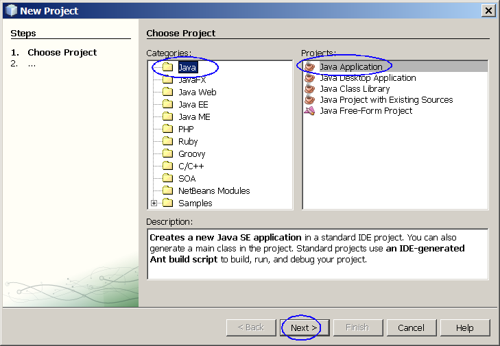
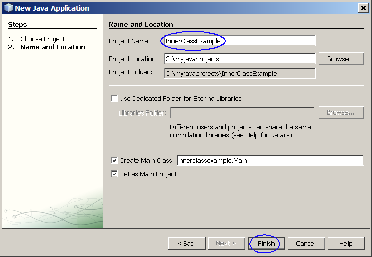

Java Inner Class

Inner classes are essentially classes defined inside other classes and
act like members of the enclosing class. In this lab, you are going to
learn basic concept of inner class.
Expected duration: 30 minutes


Software Needed
Before you begin, you need to install required software (JDK and
NetBeans IDE) on your
computer as
described
here. Also download and unzip the hands-on lab file mentioned
below.
- 1006_javainnerclass.zip (download)
- It contains this document and the lab contents
- Download it and unzip in a directory of your choice
Change Log
- Feb. 9th, 2007: Created
- March 25th, 2007: Homework is added
- Jan. 10th, 2009: NetBeans 6.5 is used
Lab Exercises and
homeworks
Exercise 1: Build and run Java
applications that use inner class
(1.1)
Build and run a simple application that uses an inner class
0. Start the NetBeans IDE if you have
not done so.
1. Create a NetBeans project
- Select File from
top-level menu and
select New Project.
- Observe that the New Project
dialog box appears.
- Select Java under Categories section and Java Application under Projects section.
- Click Next.

- Under Name
and Location pane, for the Project
Name field, enter InnerClassExample.
(Figure-1.10 below)
- Click Finish.

Figure-1.10: Create a new NetBeans project
- Observe that the InnerClassExample
project node is created
under Projects pane of the
NetBeans IDE and IDE generated Main.java
is displayed in the
editor window of the IDE.
2. Modify the IDE generated
Main.java
as shown in Code-1.11 below.
package innerclassexample;
public class Main {
public static void main(String[] args) {
// Create an object instance of a class that contains
// an inner class - we will call it outer class.
OuterClass oc = new OuterClass();
// Create an object instance of an inner class.
OuterClass.InnerClass ic = oc.new InnerClass();
// Display data from both outer class and inner class.
System.out.println("Access data from outer class = " + oc.data);
System.out.println("Access data2 from inner class = " + ic.data2);
// Invoke a method from an inner class
ic.method();
}
}
|
Code-1.11: Main.java
3. Write
OuterClass.java as
shown in Code-1.12 below.
package innerclassdemo;
/**
*
* @author sang
*/
public class OuterClass {
/** Creates a new instance of OuterClass */
public OuterClass() {
}
// Define a
variable in the outer class
int data = 5;
// Define an inner class
class InnerClass {
int data2 = 10;
void method() {
System.out.println("data from OuterClass = " + data);
System.out.println("data2 from InnerClass = " + data2);
}
}
}
|
Code-1.12: OuterClass.java
3. Build and run the program
- Right click InnerClassExample project
node and select Run.
- Observe the result in the Output
window of the NetBeans IDE.
(Figure-1.12 below)
Access data from outer class = 5
Access data2 from inner class = 10
data from OuterClass = 5
data2 from InnerClass = 10
|
Figure-1.13: Result
Solution:
This exercise is provided as a ready-to-open-and-run
NetBeans project as part of hands-on lab zip file. You can find it as
<LAB_UNZIPPED_DIRECTORY>/javainnerclass/samples/InnerClassExample.
You can just open it and run it.
Summary
In this exercise, you have build and run
Java applications that use an inner class.
Return to the top
Homework
exercise (for people who
are taking Sang Shin's "Java Programming online course")
1. The homework is to modify the InnerClassExample project
as following. (You might want to create a new project by copying
the InnerClassExample
project. You can name the homework project in any way you want
but here I am going to call it MyOwnInnerClassExample.)
- Modify OuterClass.java
to create another
inner class within the InnerClass itself.
- Modify InnerClassExample.java
as shown in Code-1.15 below.
package innerclassexample;
public class InnerClassDemo {
public static void main(String[] args) {
// Create an object instance
of a class that contains
// an inner class - we will
call it outer class.
OuterClass oc = new
OuterClass();
// Create an object instance
of an inner class.
OuterClass.InnerClass ic =
oc.new InnerClass();
// Create an object instance of an inner
class.
OuterClass.InnerClass.InnerInnerClass iic = ic.new
InnerInnerClass();
// Display data from both
outer class and inner class.
System.out.println("Access
data from outer class = " + oc.data);
System.out.println("Access
data2 from inner class = " + ic.data2);
System.out.println("Access data3 from
innerinner class = " + iic.data3);
// Invoke a method from an
inner class
ic.method();
iic.method2();
}
}
|
Code-1.15: Modified InnerClassDemo.java
- The result should look something similar to Figure-1.16 below.
Access data from outer class = 5
Access data2 from inner class = 10
Access data3 from innerinner class = 15
data from OuterClass = 5
data2 from InnerClass = 10
data from OuterClass = 5
data2 from InnerClass = 10
data3 from InnerInnerClass = 15
|
Figure-1.16: Output
- Zip file of the the
MyOwnInnerClassExample
NetBeans project. (Someone else
should be able to open and run it as a NetBeans project.) You can
use your favorite zip utility or you can use "jar" utility that comes
with JDK as following.
- cd <parent directory that contains MyOwnjavainnerclass
directory>
(assuming you named your project as MyOwnInnerClassExample)
- jar cvf MyOwnInnerClassExample.zip MyOwnInnerClassExample (MyOwnInnerClassExample should
contain nbproject directory)
- Captured output screen -
name it as JavaIntro-javainnerclass.gif
orJavaIntro-javainnerclass.jpg (or
JavaIntro-javainnerclass.<whatver
graphics format>)
- Any screen capture that shows that your program is working is
good enough. No cosmetic polishment is required.
- If you decide to use
different IDE other than NetBeans, the zip
file should contain all the files that are needed for rebuilding the
project.